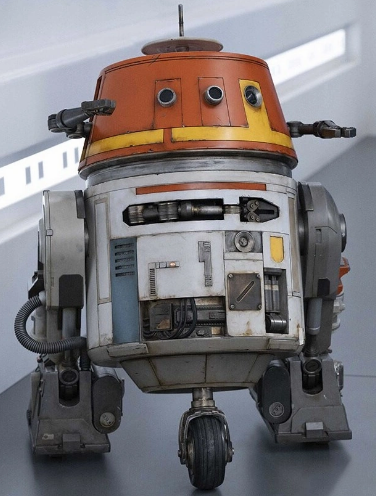
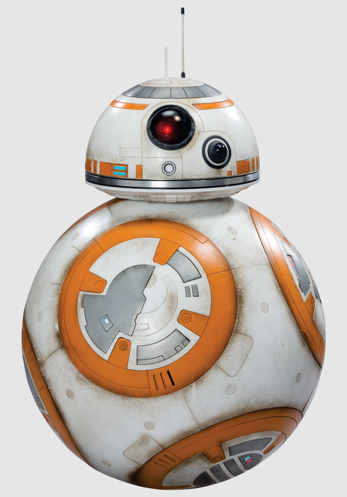

A fun loving, ever surviving astromech droid that is one of the only characters to appear in every Star Wars movie in teh Skywalker Saga. R2 (as he is frequently called) has helped to save the galaxy and numerous star systems throughout his time in the franchise, sometimes even being the backbone of missions. He has been a fighter, a rebel and a friend.
A fan favorite of the viewers of the animated show Star Wars: Rebels, Chopper, whose formal astromech name is C1-10P, is stolen the hearts of many in his tenure in the Star Wars universe. Well known as the cranky prankster, he is a valued asset to the rebellion and to the woman that saved him on Ryloth, Hera Syndulla, since he was rescued. While he's grateful, he does his fair share of teasing right back at his friends and crewmates on the Ghost.
A newer addition to the collection of famous Star Wars droids, BB-8 had his debut in Star Wars: The Force Awakens where his thumbs up using his lighter stole the hearts of many in theaters worldwide. With his unique build of being spherical and his goofy personality he has cemented himself as one of the modern droid classics in the Star Wars universe.